Slide 01 · Overview
Sequential Deterministic DAG
Zero Silent Drop
Data Transformation Pipeline: Sequential Deterministic DAG
กระบวนการแปลงสภาพและตรวจคุณภาพข้อมูลระดับแถวบน Apache Spark & Delta Lake
กลไกการประมวลผล (Engine Execution)
- ทำงานเป็น Sequential Deterministic DAG จำนวน 13 Stages ต่อเนื่องในโหมด ALIGN และ TRANSFORM
- ควบคุมด้วย
RunContextบน Apache Spark ประมวลผลแบบ In-Memory ใน RAM ทั้งหมด โดยไม่มีการเขียนดิสก์ซ้ำซ้อน - ยึดหลักการ Zero Silent Drop: ข้อมูลทุกแถวต้องมีที่ไป แถวสะอาดเข้า Silver Active แถวมีปัญหาเข้า Silver Quarantine
5 ภารกิจหลักในการเปลี่ยนรูปข้อมูล
- จัดโครงสร้างและป้องกันข้อมูลสูญหาย (Align & Smart Promotion)
- รับมือความเปลี่ยนแปลงโครงสร้าง (Schema Drift Governance)
- ล้างข้อมูลและตัดแถวซ้ำ (Safe Cleaning & Deduplication)
- ปรับข้อมูลสู่มาตรฐานสากล (Standardization)
- บังคับกฎธุรกิจและตรวจจับสถิติขั้นสูง (Validation & Outlier Detection)
Architecture View:
Apache Spark 3.5.0 Master Web UI (http://localhost:8081/) — In-Memory DAG Execution
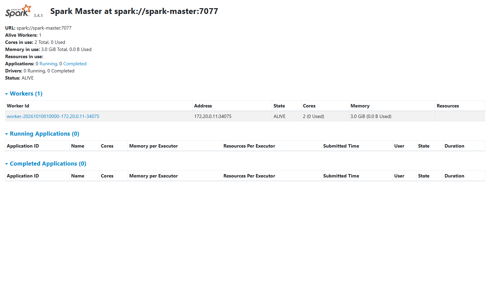
flowchart TD
%% Styling Classes
classDef raw fill:#1e293b,stroke:#64748b,stroke-width:2px,color:#f8fafc;
classDef m1 fill:#0f172a,stroke:#38bdf8,stroke-width:2px,color:#f8fafc;
classDef m2 fill:#0f172a,stroke:#f59e0b,stroke-width:2px,color:#f8fafc;
classDef m3 fill:#0f172a,stroke:#818cf8,stroke-width:2px,color:#f8fafc;
classDef m4 fill:#0f172a,stroke:#a855f7,stroke-width:2px,color:#f8fafc;
classDef m5 fill:#0f172a,stroke:#ec4899,stroke-width:2px,color:#f8fafc;
classDef active fill:#064e3b,stroke:#10b981,stroke-width:2.5px,color:#ffffff,font-weight:bold;
classDef quarantine fill:#7f1d1d,stroke:#ef4444,stroke-width:2.5px,color:#ffffff,font-weight:bold;
classDef telemetry fill:#1e1b4b,stroke:#6366f1,stroke-width:1.5px,stroke-dasharray:4 4,color:#c7d2fe;
subgraph INBOUND ["1. แหล่งข้อมูลนำเข้า (Inbound Ingestion)"]
RawData["ข้อมูลดิบนำเข้า (Inbound Raw Data)
CSV, Parquet, JSON, CDC Stream"]:::raw
end
subgraph ENGINE ["2. กระบวนการแปลงสภาพข้อมูล 5 ภารกิจหลัก (Data Transformation DAG)"]
direction TB
M1["ภารกิจที่ 1: schema_align
Align & Smart Promotion
• ตัดช่องว่าง ลบอักขระพิเศษ จับคู่ชื่อมาตรฐาน
• สร้าง MD5 Dynamic row_hash คีย์หลักอัตโนมัติ
• Smart Type Promotion: ปรับ Integer เป็น Double"]:::m1
M2{"ภารกิจที่ 2: schema_drift
Schema Drift Governance
ประเมินระดับความรุนแรง"}:::m2
M3["ภารกิจที่ 3: auto_clean & dedup
Safe Cleaning & Deduplication
• DSL Remediation Sandbox (fillna, calc, cast, filter)
• ตัดแถวซ้ำ 2 ชั้น: Exact Row Hash & Business Key"]:::m3
M4["ภารกิจที่ 4: standardize
Standardization & Normalization
• แปลงศักราชไทย พ.ศ. เป็นสากล ค.ศ. อัตโนมัติ
• ปรับรูปแบบวันที่ ISO-8601 (YYYY-MM-DD)
• จัดกลุ่มหมวดหมู่ตาม Business Taxonomy"]:::m4
M5{"ภารกิจที่ 5: validation, range & anomaly
Validation & Outlier Detection
• ตรวจสอบกฎช่วงค่า (Range Bounds)
• สถิติขั้นสูง: Tukey IQR (k=1.5) & 3-Sigma Z-Score"}:::m5
M1 --> M2
M2 -->|"โครงสร้างปกติ / Auto-Evolution ปลอดภัย"| M3
M3 --> M4
M4 --> M5
end
subgraph STORAGE ["3. ปลายทางคลังข้อมูลสองโซน (Dual-Zone Medallion Lakehouse)"]
SilverActive[("Silver Active Store
ข้อมูลสะอาด 100% พร้อมใช้งาน
• Delta Lake ACID Tables
• พร้อมเชื่อมต่อ Gold & BI Dashboard")]:::active
SilverQuarantine[("Silver Quarantine Store
ข้อมูลกักกันรอการตรวจสอบ
• แนบคอลัมน์ reject_reason ทุกแถว
• ตรวจสอบย้อนกลับได้ ไม่มีการลบทิ้ง")]:::quarantine
end
subgraph HEALING ["4. ระบบเฝ้าระวังและการแจ้งเตือน (Closed-Loop Upstream Healing)"]
MetricsTele["RunContext Observability
• บันทึก Recall: 1.0 & Precision: 0.9589
• แจ้งเตือน Webhook/Slack ไปยังระบบต้นน้ำ"]:::telemetry
end
%% Flow Connections
RawData --> M1
M2 -->|"คอลัมน์วิกฤตสูญหาย / Type ผิดปกติ"| SilverQuarantine
M5 -->|"ผ่านเกณฑ์คุณภาพทั้งหมด (Clean Rows)"| SilverActive
M5 -->|"ตกเกณฑ์คุณภาพ / ผิดปกติทางสถิติ"| SilverQuarantine
SilverQuarantine -.->|"ส่งเหตุผลการกักกัน"| MetricsTele
MetricsTele -.->|"แจ้งเตือนปรับปรุงแก้ไข"| RawData
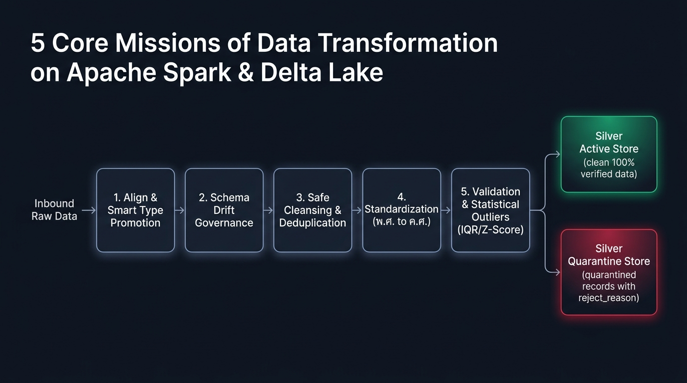
[ ข้อมูลดิบนำเข้า (Inbound Raw) ] ──► [ 1. schema_align ] ──► [ 2. schema_drift ] ──► [ 3. auto_clean & dedup ]
│
[ Silver Active Store ] ◄── [ 5. validation, range & anomaly ] ◄── [ 4. standardize ] ◄─────┘
│ │
▼ ▼
(ข้อมูลสะอาด 100% พร้อมใช้งาน) [ Silver Quarantine Store ] (ข้อมูลกักกันตรวจสอบ พร้อม reject_reason)
Slide 02 · Missions 1 & 2
Smart Type Promotion
Schema Drift Governance
Missions 1 & 2: Structural Alignment & Schema Drift Governance
จัดระเบียบโครงสร้าง นวัตกรรม Smart Type Promotion และเกราะป้องกัน Schema เปลี่ยนแปลง
View:
DataServe Schema Catalog & Drift Governance (https://localhost/schema)
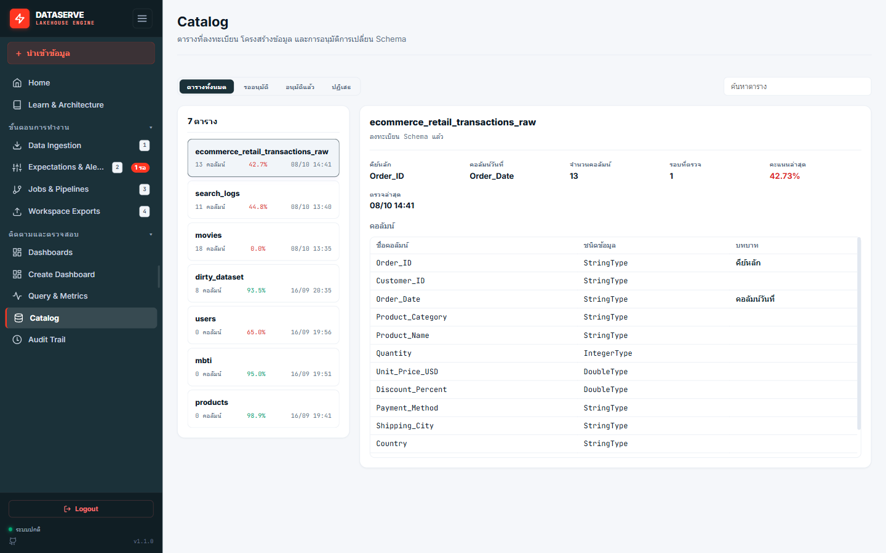
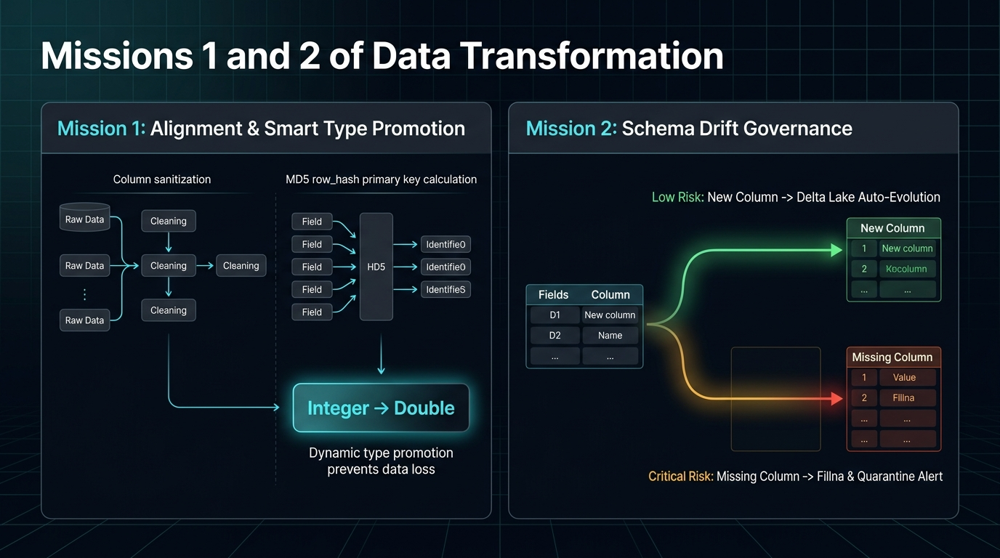
Mission 1: Alignment & Smart Promotion
- Dynamic row_hash: รวมทุกคอลัมน์คำนวณ MD5 เป็น Primary Key อัตโนมัติ
- Smart Type Promotion: สแกนพบทศนิยมปรับ
Integer -> Doubleอัตโนมัติ ป้องกันข้อมูลสูญหาย 100%
Mission 2: Schema Drift Governance
- Low Risk (คอลัมน์ใหม่): อนุมัติ Auto-Evolution บน Delta Lake อัตโนมัติ
- Critical Risk (คอลัมน์สำคัญหาย): เติมค่าว่างกันระบบล่ม กักกันข้อมูลรอบนั้น และแจ้งเตือนทีมทันที
Slide 03 · Missions 3 & 4
Deduplication
Buddhist Era Normalization
Missions 3 & 4: Cleansing, Deduplication & Normalization
เยียวยาข้อมูลด้วย Secure DSL Sandbox, ตัดแถวซ้ำ 2 ชั้น และแปลง พ.ศ. เป็น ค.ศ. สากล
View:
DataServe Expectations, Rules Config & Cleansing Sandbox (https://localhost/rules)
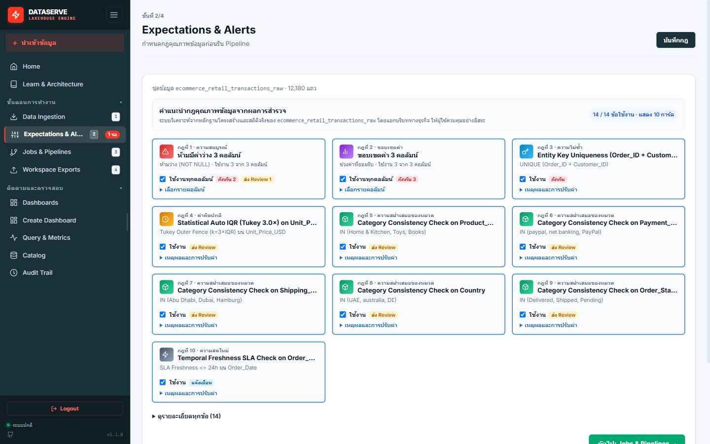
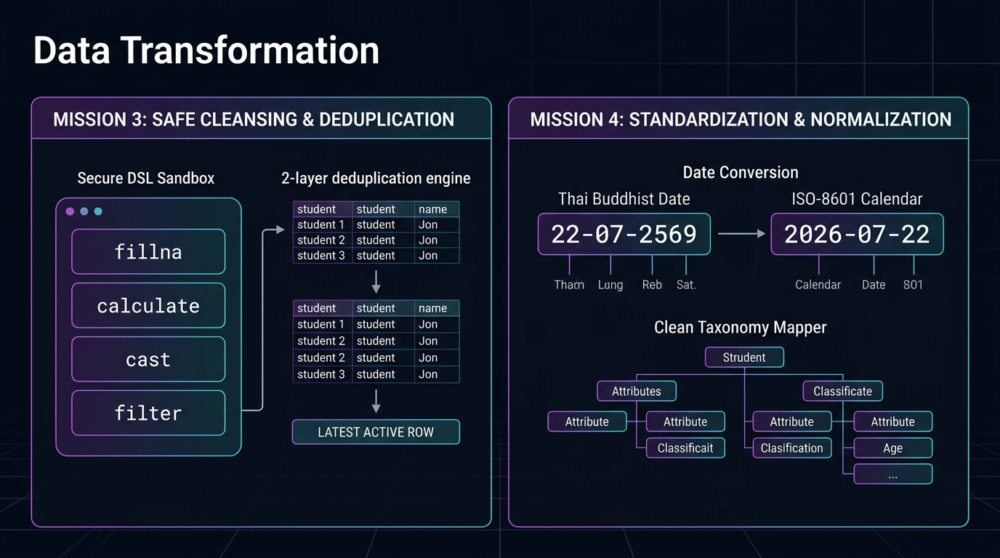
Mission 3: Safe Cleansing & 2-Layer Dedup
- DSL Sandbox: 4 คำสั่งปลอดภัย (
fillna,calculate,cast,filter) ไร้เสี่ยง Code Injection - 2-Layer Deduplication: ตัดซ้ำล่วงหน้า + เปรียบเทียบเวลาเก็บแถวล่าสุด แถวซ้ำส่ง Quarantine
Mission 4: Standardization & Taxonomy
- Buddhist Era Normalization: ตรวจจับ พ.ศ. (> 2500) หัก 543 แปลงเป็น ISO
YYYY-MM-DD - Taxonomy Mapping: แมปหมวดหมู่ตามพจนานุกรม Elasticsearch กลางโดยไม่ต้องแก้โค้ด
Slide 04 · Mission 5
Business Range Rules
Tukey IQR & 3-Sigma
Mission 5: Business Rules & Advanced Statistical Outlier Detection
ผสานกฎขอบเขตธุรกิจเข้ากับแบบจำลองสถิติขั้นสูง เพื่อดักจับข้อมูลผิดธรรมชาติ
View:
DataServe Whitebox Audit Trail Stage 4: 3-Way Segregation (https://localhost/whitebox)
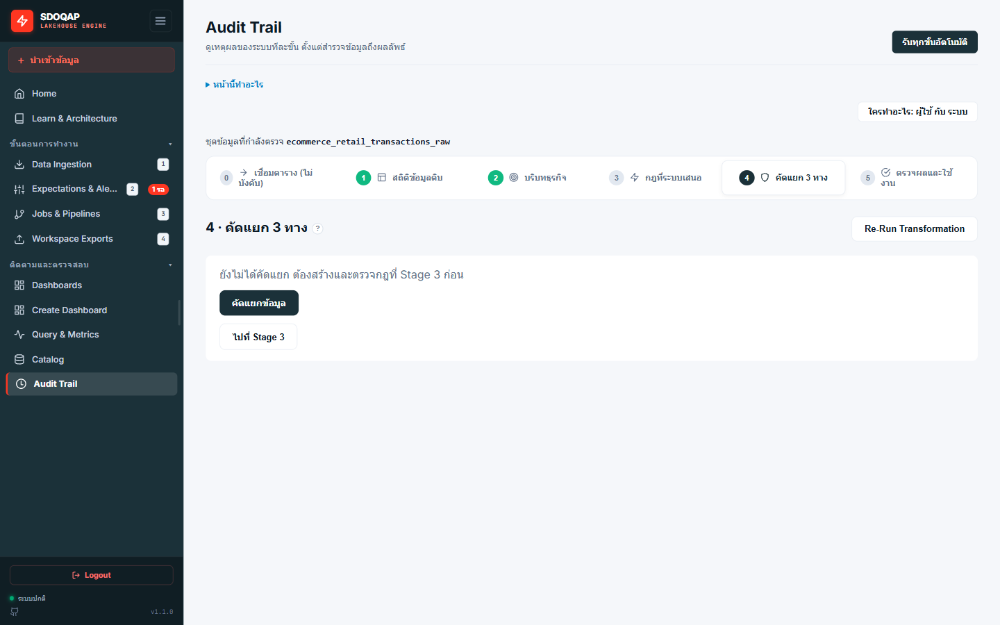
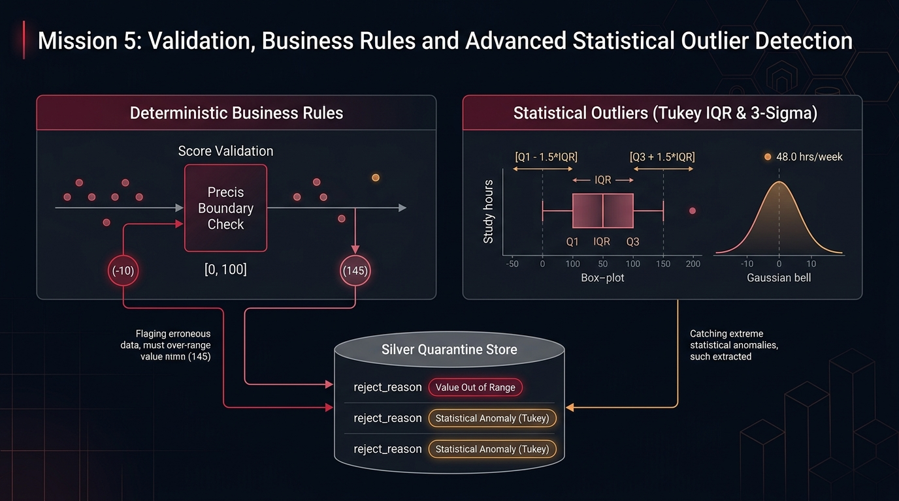
Deterministic Business Rules
- Explicit Range Check: บังคับช่วงค่า เช่น คะแนน [0, 100] หากติดลบ (-10) หรือเกิน (145) ส่งกักกันทันที
- Mandatory Null Check: ตรวจสอบคีย์หลักหรือคอลัมน์สำคัญห้ามเป็นค่าว่าง (
missing_primary_key)
Advanced Statistical Models
- Tukey IQR Fences: ดักจับค่าผิดธรรมชาติ เช่น ชั่วโมงเรียน 48.0 ชม./สัปดาห์ (เกินรั้วปกติ > 12 ชม.)
- Gaussian 3-Sigma & Quarantine: ตรวจสอบความเบี่ยงเบนและรวมทุกข้อผิดพลาดพร้อม
reject_reason
Slide 05 · Matrix
Before & After Examples
Concrete Transformation Examples
ตัวอย่างเปรียบเทียบข้อมูลก่อนแปลง สภาพผลลัพธ์ และการคัดแยกปลายทาง
View Mode:
DataServe Whitebox Audit Trail Stage 5: Results Inspection & reject_reason (https://localhost/whitebox)
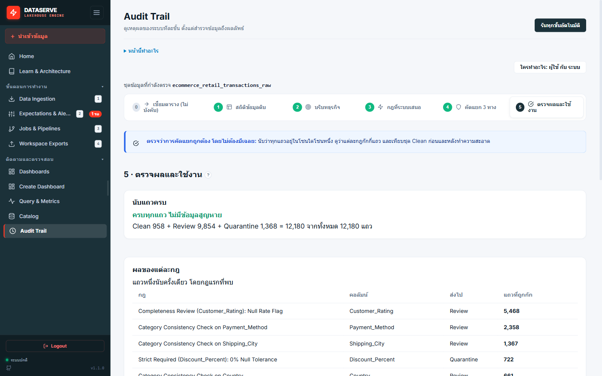
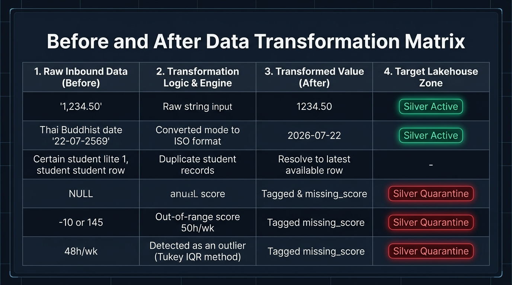
flowchart LR
classDef before fill:#1e293b,stroke:#64748b,stroke-width:1.5px,color:#f8fafc;
classDef logic fill:#0f172a,stroke:#38bdf8,stroke-width:1.5px,color:#38bdf8;
classDef active fill:#064e3b,stroke:#10b981,stroke-width:2px,color:#ffffff,font-weight:bold;
classDef quar fill:#7f1d1d,stroke:#ef4444,stroke-width:2px,color:#ffffff,font-weight:bold;
subgraph G_CLEAN ["กลุ่มแปลงสำเร็จพร้อมใช้งาน (Silver Active Store)"]
direction TB
subgraph C1 ["กรณีที่ 1: ตัวเลขมีคอมม่า"]
B1["'1,234.50'"]:::before --> L1["ตัดคอมม่า & Cast Double"]:::logic --> A1["1234.50"]:::active
end
subgraph C2 ["กรณีที่ 2: วันที่ปี พ.ศ."]
B2["'22-07-2569'"]:::before --> L2["ปี > 2500 หัก 543"]:::logic --> A2["'2026-07-22'"]:::active
end
subgraph C3 ["กรณีที่ 3: ข้อมูลซ้ำซ้อน"]
B3["รหัส นศ. ซ้ำ 2 แถว"]:::before --> L3["Dedup คีย์หลักล่าสุด"]:::logic --> A3["เก็บแถวล่าสุด (Active)
สกัดแถวซ้ำ (Quarantine)"]:::active
end
end
subgraph G_QUAR ["กลุ่มตรวจพบปัญหาและกักกัน (Silver Quarantine Store)"]
direction TB
subgraph C4 ["กรณีที่ 4: ค่าว่างในคอลัมน์บังคับ"]
B4["คะแนน = NULL"]:::before --> L4["ตรวจพบคอลัมน์บังคับว่าง"]:::logic --> Q4["Quarantine:
missing_score"]:::quar
end
subgraph C5 ["กรณีที่ 5: คะแนนหลุดช่วงกฎธุรกิจ"]
B5["คะแนน -10 หรือ 145"]:::before --> L5["หลุดช่วงกฎ [0, 100]"]:::logic --> Q5["Quarantine:
out_of_range"]:::quar
end
subgraph C6 ["กรณีที่ 6: ค่าสุดโต่งผิดธรรมชาติทางสถิติ"]
B6["เรียน 48.0 ชม./สัปดาห์"]:::before --> L6["Tukey IQR เกินรั้วปกติ"]:::logic --> Q6["Quarantine:
outlier_details"]:::quar
end
end
| # | ข้อมูลดิบต้นทาง (Before) | กลไกการแปลงสภาพ (Transformation Logic) | ข้อมูลผลลัพธ์ | ปลายทางที่จัดเก็บ |
|---|---|---|---|---|
| 1 | "1,234.50" (ข้อความมีจุลภาค) | ตัดเครื่องหมาย , ออก และแปลงชนิดเป็นตัวเลขทศนิยม |
1234.50 |
Silver Active |
| 2 | "22-07-2569" (วันที่ปี พ.ศ.) | ตรวจพบปี > 2500 หักออก 543 แปลงเป็นสากล ISO | "2026-07-22" |
Silver Active |
| 3 | รหัสนักศึกษาซ้ำกัน 2 แถว | ตรวจคีย์หลัก เรียงตามเวลาล่าสุด ตัดแถวซ้ำออก | แถวล่าสุด | Active / Quarantine |
| 4 | คะแนนสอบเป็นค่าว่าง (NULL) | ตรวจพบคอลัมน์บังคับมีค่าว่าง | - | Quarantine: missing_score |
| 5 | คะแนนสอบติดลบ -10 หรือ 145 | ตรวจพบค่าหลุดจากช่วงกฎธุรกิจ [0, 100] | - | Quarantine: out_of_range |
| 6 | ชั่วโมงเรียน 48.0 ชม./สัปดาห์ | สถิติ Tukey IQR ตรวจพบค่าเกินรั้วปกติ (> 12 ชม.) | - | Quarantine: outlier_details |
Slide 06 · Verification
Recall: 100%
Precision: 95.89%
Reconciliation: 100%
Empirical Verification & 100% Volume Reconciliation
การพิสูจน์ความถูกต้องทางวิศวกรรมข้อมูลด้วยชุดทดสอบจริงที่มี Ground Truth (10,100 แถว)
View:
DataServe Observability & Metrics Dashboard (https://localhost/dashboard) — 100% Reconciliation
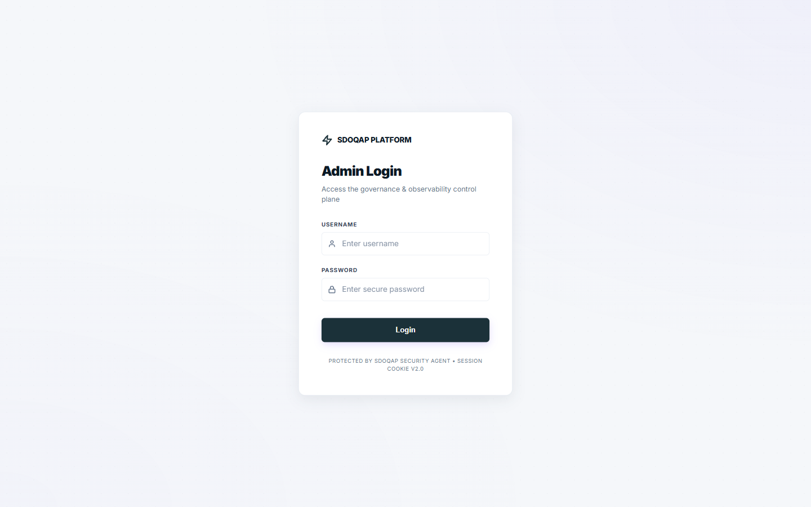
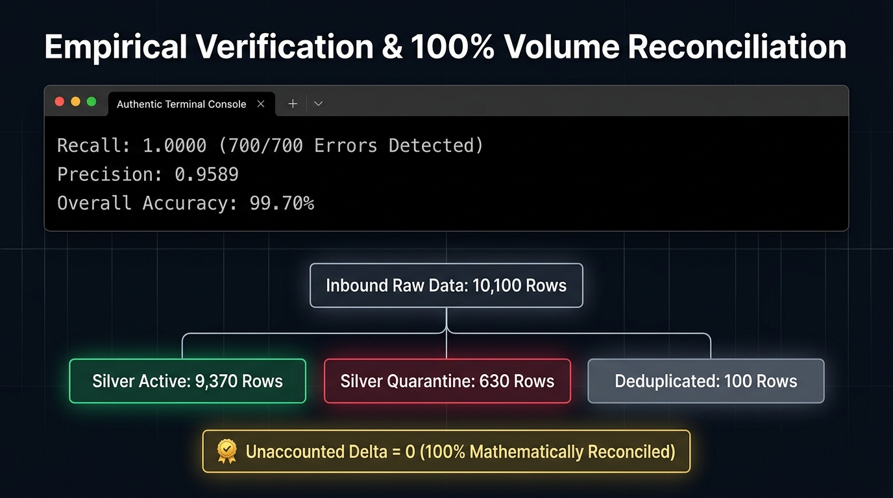
100%
Detection Recall
ตรวจจับครบ 700/700 แถว
95.89%
Precision
มี Safety Margin 30 แถว
99.70%
Overall Accuracy
ความถูกต้องระดับแถว
0 แถว
Unaccounted Delta
ไม่มีข้อมูลสูญหาย
สมการกระทบยอดปริมาณข้อมูล 100% (Data Volume Reconciliation)
Inbound (10,100) = Active (9,370) + Quarantine (630) + Deduplicated (100) | Delta = 0 แถว
Speaker Script & Teleprompter
Slide 1 of 6
"สวัสดีครับ ในส่วนของกระบวนการ Data Transformation ของ DataServe เราออกแบบสถาปัตยกรรมให้ทำงานเป็น Sequential Deterministic DAG จำนวน 13 ขั้นตอนต่อเนื่องบน Apache Spark ครับ โดยควบคุมผ่าน RunContext ทำงานบน RAM ทั้งหมดโดยไม่มีการเขียนดิสก์ซ้ำซ้อน ทั้ง 13 ขั้นตอนนี้ถูกจัดหมวดหมู่เป็น 5 ภารกิจหลัก ตั้งแต่การจัดโครงสร้าง ป้องกันข้อมูลสูญหาย รับมือกับ Schema ที่เปลี่ยนไป ล้างข้อมูล ตัดแถวซ้ำ ปรับมาตรฐานเวลา และตรวจจับความผิดปกติด้วยสถิติขั้นสูง โดยยึดหลักการ Zero Silent Drop คือไม่ลบข้อมูลทิ้ง แต่แยกแถวสะอาดและแถวกักกันออกจากกันอย่างชัดเจนครับ"
"ในภารกิจที่ 1 เราเริ่มต้นด้วยการจัดโครงสร้างและทำความสะอาดชื่อคอลัมน์ พร้อมสร้าง row_hash ด้วย MD5 สิ่งสำคัญคือฟีเจอร์ Smart Type Promotion ครับ ในระบบทั่วไปถ้าสคีมาเป็น Integer แต่ข้อมูลส่งทศนิยมมา ข้อมูลมักจะกลายเป็น Null ทันที แต่ระบบของเราจะสแกนหาเศษทศนิยมก่อน ถ้าพบจะเลื่อนชนิดเป็น Double ให้อัตโนมัติ ช่วยป้องกันข้อมูลสูญหายได้ 100% และในภารกิจที่ 2 หากต้นทางเปลี่ยนโครงสร้างข้อมูล เช่น คอลัมน์สำคัญหายไป ระบบจะไม่ล่ม แต่จะเติมค่าว่างชั่วคราว กักกันข้อมูลรอบนั้น และส่งแจ้งเตือนให้ทีม Data เข้ามาตรวจสอบทันทีครับ"
"ถัดมาเป็นภารกิจที่ 3 และ 4 ครับ ในการทำความสะอาด เรามีเอนจิน DSL ที่ปลอดภัย รองรับการเติมค่าว่างและการคำนวณสูตรพื้นฐาน และมีการตัดแถวซ้ำโดยเปรียบเทียบตามเวลา ซึ่งจะเก็บเฉพาะเวอร์ชันล่าสุดไว้ใช้งาน ส่วนแถวซ้ำจะถูกส่งไปกักกัน และในภารกิจที่ 4 เราแก้ปัญหาคลาสสิกของข้อมูลไทย คือการบันทึกปีเป็น พ.ศ. ระบบจะตรวจจับและแปลงเป็นปี ค.ศ. สากลให้อัตโนมัติ พร้อมทั้งจัดหมวดหมู่ข้อมูลตามพจนานุกรมกลาง ทำให้ข้อมูลเป็นระเบียบและพร้อมใช้งานร่วมกับระบบสากลครับ"
"ในภารกิจที่ 5 คือการตรวจคุณภาพเชิงลึกครับ เราผสาน 2 กลไกเข้าด้วยกัน: หนึ่งคือกฎธุรกิจที่กำหนดไว้ชัดเจน เช่น คะแนนสอบต้องอยู่ระหว่าง 0 ถึง 100 แถวที่ได้คะแนนติดลบหรือเกิน 100 จะถูกคัดออกทันที และสองคือการใช้แบบจำลองสถิติขั้นสูงอย่าง Tukey IQR Fences เข้ามาช่วยดักจับค่าที่ผิดธรรมชาติ เช่น ชั่วโมงเรียน 48 ชั่วโมงต่อสัปดาห์ ซึ่งไม่ติดลบแต่เป็นไปไม่ได้ในโลกจริง เมื่อตรวจครบทุกมิติ ระบบจะนำข้อมูลเสียทั้งหมดมารวมกัน ผูกเหตุผลความผิดพลาดกำกับไว้ทุกแถว และบันทึกลงสู่ Silver Quarantine อย่างเป็นระบบครับ"
"สไลด์นี้แสดงให้เห็นภาพตัวอย่างการแปลงสภาพข้อมูลจริง 6 กรณีครับ ข้อมูลตัวเลขที่มีคอมม่าจะถูกแปลงเป็นตัวเลขทศนิยม วันที่ พ.ศ. จะถูกเปลี่ยนเป็น ค.ศ. ข้อมูลที่ส่งซ้ำจะถูกตัดเหลือเฉพาะแถวล่าสุด ส่วนแถวที่มีข้อผิดพลาด เช่น คะแนนว่าง คะแนนติดลบ หรือชั่วโมงเรียนเกินจริง จะถูกส่งเข้า Silver Quarantine โดยมีคอลัมน์ระบุเหตุผลกำกับไว้ทุกแถว ทำให้ระบบปลายทางมั่นใจได้ว่าจะได้รับเฉพาะข้อมูลที่สะอาด 100% ไปใช้งานครับ"
"สไลด์สุดท้ายนี้คือหลักฐานยืนยันความถูกต้องทางวิศวกรรมของระบบครับ เรานำชุดข้อมูลทดสอบ 10,100 แถว ซึ่งมีข้อผิดพลาดที่จงใจใส่ไว้ 700 แถวมาประมวลผลจริง ผลลัพธ์คือระบบสามารถตรวจพบข้อผิดพลาดได้ครบทั้ง 700 แถว บรรลุค่า Recall เต็ม 100% โดยตรวจจับคะแนนว่างได้ 300 แถว, คะแนนหลุดช่วง 200 แถว, ชั่วโมงเรียนผิดปกติ 100 แถว และแถวซ้ำ 100 แถวครบถ้วน และที่สำคัญที่สุดคือสมการกระทบยอดครับ ข้อมูลนำเข้า 10,100 แถว แยกเป็นข้อมูลสะอาด 9,370 แถว ข้อมูลกักกัน 630 แถว และแถวซ้ำ 100 แถว รวมกันได้ 10,100 แถวลงตัวพอดี ผลต่างเป็น 0 แถว ไม่มีข้อมูลสูญหายแม้แต่แถวเดียว นี่คือข้อพิสูจน์ว่า Data Transformation Engine ของ DataServe ทำงานได้อย่างแม่นยำ โปร่งใส และพร้อมสำหรับงานระดับองค์กรอย่างแท้จริงครับ ขอบคุณครับ"